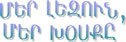

Lyzov yv Q0sk
|
 |
#ajaq gu hantibim martox5 oronx ha3yren pa-yru im cidxa/ 2yves darpyr gu hn[yn1 Yrpymn no3nisg darpyr imasdow gu cor/a/yn1 Grna3 ullal or anclyrene gu ;arcmanyn1
)rinag` amynamdyrim parygamnyres megovn hyd q0sagxa/ adyn5 n,maryxi ;e sqal gu cor/a/e ir pa3u7 yrp an gu 'or2er in/i usyl ;e ma3ru hy-a2a3nin bedk ovner5 usav7
6 Bedk ym yr;al1Yrgar mda/yxi ;e in[ov a3tbes usav5 i wyr]o3 yzragaxovxi ;e anclyrenow g\usynk`
I have to goHos` 8go9 pa3u anyryvo3; e yv yrp ha3yreni ;arcmanyx5 usav 8bedk ym yr;al95 'oqanag usylov 8bedk e or yr;am91
Ahavasig barz 0rinag mu a3n an2in5 or anclyren gu mda/e yv ha3yreni ;arcmanylow g\arda3a3dovi1
Canada3i me] g\abrin darpyr dysagi azcyr5 oronk darpyr lyzovnyr gu q0sin yv yrp a3t qa-nov;yan me] cdnovis5 gu zcas or irynk darpyr hn[ivnnyr ovnin1 Saga3n ha3yrov me] al darpyr yrgirnyre yga/ martig gan5 Bolsaha35 Ycibdaha35 Fransaha35 #ovnaha35 yva3ln1 Dagavin5 ,adyr hos /na/ ullalow5 dan me] irynx hyd pnago. my/ ha3r gam my/ ma3r ovnin5 oronk irynx /nntawa3ri lyzovn gu q0sin1 A3t lyzovnyru cava-agan parpa-nyr yn1 A3sinkn A3njari gam Movsa Ly-i parpa-5 Ovrfa3i parpa-5 Dicranagyrdi parpa-5 yva3ln1
)rinag` 8in[be|s ys9 usylov 'oqaren
A3njarxin g\use6 {io|v xus
Dicranagyrdxin g\use6 I|n[qus is
Kysabxin g\use6 {o|v xis
Ha3rs Dicranagyrdxi e1 Myr hyd gu pnagi na3yv h0rako3rs1 "okr darikes 3ajaq gu lsei ;e in[bes ha3rs yv h0rako3rs irar hyd darpyr lyzov mu gu q0sein1 {ei cidyr or saga3n a3t al ha3yreni 2yv mun e1 )r mu m0dyxa3 h0rakro]s yv n,maryxi or ha3yren ;yr; gu gartar1 Zarmankow harxovxi7
6 H0rko4vr5 ha3yren gartal cidy|s1
H0rako3rs pargaxav5 dy.en xadgyx yv harxovx7
6 An,ov,d cidym5 a3t al harxo|vm e1
Anmy. 2a3now harxovxi7
6 E5 haba i|n[ lyzov gu q0sis baba3in hyd1
H0rako3rs min[yv a3s0r gu badme ,ovr]innyrovn ;e in[bes gu gar/ei or dicranagyrdxinyrov parpa-u 0dar lyzov mun e1
Cank myr tbroxi a,agyrdov;yan5 or darinyrov un;axkin nor pa-aran mu gazma/ e1 Anxyal dari 8Agn96i me] e] mu 3adgaxovxa/ eink Sovrp #agopyan 8pa-am;yrkin91 Ahavasig kani mu 0rinagnyr7
- kikyl6 kick unyl5 odkow gix dal
- sakapov;ivn6 suck up unyl
- Boksyl6 box dal5 p-ovnxkow harova/yl
- sahyxovr6 'oq dal (0rinag` cirkt sahyxovr)
- Zabel6 ges gnig
- co3nzco3n ja,6 olo-now yv sdyb.inow ja,
#ajaq a,agyrdnyru yrp ja,aranen nyrs gu qov=yn yv ja,u gu dysnyn5 g\usyn7
6 Uqk5 co3nzco3n ja,n e noren1
Aha darpyr pa-yr oronk gu cor/a/ovin usylov hamar 8hy-a2a3n unyl91
- Panal6 A3s0r5 wyxin kyzi gu panam1
- @a3nyl6 A3s0r5 wyxin kyzi gu 2a3nym1
- Hy-a2a3nyl6 A3s0r5 wyxin kyzi gu hy-a2a3nym1
- :ylyfon unyl6 A3s0r5 wyxin kyzi ;ylyfon g\unym1
- :ylyfon panal6 A3s0r5 wyxin kyzi ;ylyfon gu panam1
Y;e wa3rgyan mu mda/ynk myr usa/in masin777 In[be|s garyli e ;ylyfon mu panal1
Garc mu martig ciryr gu gllyn5 gam gu grjadyn1 )rinag`
- Tass [uri ordyv kovns ygav1
ordyv 6 orowhydyv
- Ahang cy.yxig hacovsd [ei dysa/1
ahang 6 a3sbes pa-in qy.a;ivrovmn e1
- Sa ja,u bid [ovdym1
bid 6 bidi
A,agyrdov;yan my/amasnov;ivnu anclyrenow gu mda/e5 ador hamar al ir gazma/ naqatasov;innyrovn ga-o3xu 3ajaq anclyren lyzovi 3adovg gazmova/k ovni5 orovn wra3 g\avylxovin ha3yren pa-yru1 A3sbes me]dy. gov ca3 nor lyzov mu5 or mas gu gazme 8Sovrp #agopyan9 pa-am;yrkin1 An/an0; ha3 a,agyrdin hamar5 myr war=aranin gam unthanrabes myr a,agyrdov;yan qmpagnyrovn me] lsova/ q0sagxagan ha3yren lyzovn bidi ;over dar0rinag yv anganon1 Pa3x a3tbes [e qorkin me]1 Darinyrov un;axkin5 mynk gazma/ ynk myr sy'agan pa-aranu yv ,ad 3ajaq anor me]en pa-yr gu cor/a/ynk arda3a3dovylov hamar1 Naqatasov;ivnnyrovn ga-o3xu unthanovr a-mamp ha3yreni kyraganov;ynen e5 isg anonx me] cor/a/ovo. pa-yru` ga4m anclyren5 ga4m al ancliaha3yren1 Unthanrabes 8my/9 ha3yren pa-yr [yn cor/a/ovir5 orowhydyv [yn sorwova/ gam al ,ad t=ovar gu sybovin1 Ahavasig barz 0rinag mu`
8homework-t uri|r5 man91
Gam a3s megu7
8Garbage-in me] nyde a3t ;ov.;yrt91
Wyro3i,yal 0rinagnyren gu ngadynk ;e anclyren pa-yru` 8Garbage9 yv 8homework95 oronx ha3yreni hamabadasqan pa-yrn yn` 8a.paman9 yv 8dna3in a,qadank9 gu cor/a/ovin ha3yren kyraganov;yan ;ylatra/ ba,d0nnyrow7 8homework96u ov.i. qntirn e5 isg 8Garbage96u dy.i baraca31 A3t pa-yrovn wra3 ji,t 3ydatas 30tyru avylxnylow` gu ,inynk anclyrenen a-nova/ pa-yr5 oronk gu gadaryn ha3yren kyraganagan ba,d0nnyr1
Calow ancliaha3yrenin5 a3s wyr]inu qa-novrt mun e naq ha3yreni yv aba` anclyreni1
)rinag` 8sacapov;ivn9 pa-u gazmova/ e anclyrenen a-nova/ 8suck up9 arda3a3dov;ynen5 zo3cova/` ha3yreni 8ov;ivn9 3ydatas masnigin hyd5 or g\yn;atre a,qadank gam cor/1 8Sacapov;ivn9 pa-in hn[ivnu g\ulla3 ha3yrenow yv a3lyvs cor/a/ova/ e ipryv noraco3n ha3yren pa-1 Ahavasig garc mu ovri, mnan nmo3,nyr myr pa-aba,aren` 8hick-up9 ovnynal 8movwiasirov;ivn95 8ly3;ov;ivn95 yva3ln1
Sovrp #agopen nyrs a,agyrdov;ivnu gu q0si aryvmdaha3yren1 Lsa/ ym or Los Anjylusi me] ha3yrovn my/amasnov;ivnu aryvylaha3yren gu q0si5 orowhydyv ga4m Ha3asdanxi yn yv ga4m al Barsgaha31 Darinyrov un;axkin sorwa/ ym yv gu ,arovnagym sorwil aryvylaha3 cro.nyrov cor/yrn ov irynx gyanku1 :eyv 3ajaq aryvylaha3 cro.nyrov cor/yru gu wyrlov/ynk yv g\ovsovmnasirynk5 saga3n ty- t=ovarov;ivn ovnim arac0ren ump-nylov aryvylaha3 an2i mu q0sa/u1 #ajaq hy-adysilen yrp 8Horizon9 ha3gagan /raciru gu tidym5 Ha3asdanen an2yr g\yllyn5 gu q0sin ov ja-yr gu gartan5 saga3n t=paqdapar o[in[ gu hasgnam1 Asge kani mu amis a-a]5 >arapa.i m,ago3;i yv yridasartagan harxyrov naqarar` baron Armen Sarcisyanu myr war=aranu a3xylyx1 8Agn9 ;yr;i ;.;agixnyrs zink hraviryxink myr synyagu5 'okr harxazro3xi mu hamar1 Yrp tasungyrs harxovm gu harxner yv brn7 Sarcisyanu gu badasqaner5 ys ab,a/ nsda/ sy.anin ,ovr] [ors go.ms gu na3ei5 orowhydyv [ei hasgnar usa/u1 Bedk e hasgnal saga3n5 or aryvylaha3yrenu darpyr lyzov mu [e1 Myr ha3yren lyzovi ovri, hnataryan jiv.avorovmn e1 Haga-ag ador5 an gu barovnage kyraganagan yv hn[ivna3in ganonnyr5 oronk gu darpyrin a3n ganonnyren or gu cdnovin aryvmdaha3yreni me]1
)rinag` Hn[ivn
A-nynk 8paryv9 pa-u7
Aryvylaha3yrenow 8barev9 gu hn[ovi5
Aryvmdaha3yrenow 8parev9 gu hn[ovi1
A-nynk 8cntag9 pa-u7
Aryvylaha3yrenow 8gndak9 gu hn[ovi5
Aryvmdaha3yrenow 8kntag9 gu hn[ovi1
)rinag` Kyraganagan ganon
A-nynk 8ullal9 pa-u7
Aryvylaha3yrenow 8linyl9 g\usovi5
Aryvmdaha3yrenow 8ullal9 g\usovi1
A-nynk 8usyl9 pa3u5 qonarhynk sahmanagan y.anag5 nyrga3 =amanag5 a-a]in temk5 yzagi7
Aryvylaha3yrenow gu qonarhovi hydyvyal 2yvow` 8asovm ym95
Aryvmdaha3yrenow gu qonarhovi hydyvyal 2yvow` 8g\usym91
A3sbes5 zanazan yrgirnyrov yv zanazan ,r]anagnyrov me] gu cdnynk myr ma3ryni lyzovi darpyr jiv.avorovmnyru1 Bedk e hasgnal or asonk darpyr lyzovnyr [yn5 a3l hinen zarcaxa/ parpa-nyr yv ivra3adovg yn wyro3i,yal ,r]annyrov pnagi[nyrovn1
Sovrp #agop War=aran 6 +A tasaran
S0si Asadovryan
Warant Ysa3yan
Simon _avari
(Wyratar2i4r n,ylow P7 @y-nargi n,anu)